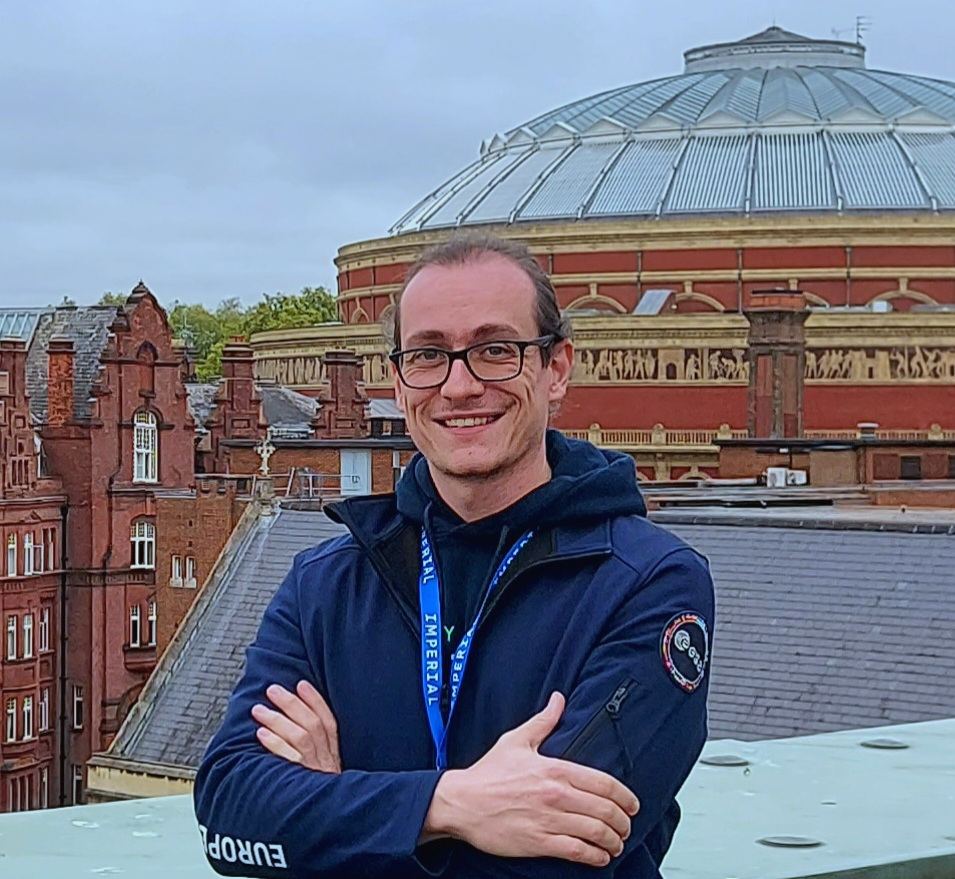

LLMs & knowledge
extraction
Developing large language models to extract meaningful information from interviews, surveys, and local experience.
Information extraction · Unconventional knowledge sources
Gabriele Bertoli / Imperial College London
I work on large language models (LLMs), machine learning (ML), and data assimilation (DA) for water science. My current focus is developing LLMs to extract relevant knowledge from unconventional sources to improve hydrological modelling, hazards forecasting and decision-making.

Research groups & collaborations
Data Learning group Rossella Arcucci Scalable Scientific Machine Learning Lab Ben MoseleyAI connects the strands of my research: extracting knowledge with LLMs, learning from environmental data, and combining observations with models. Water systems and flood risk are the application context.
Developing large language models to extract meaningful information from interviews, surveys, and local experience.
Information extraction · Unconventional knowledge sources
Developing machine learning and representation-learning methods for hydrological forecasting, from hybrid tree-based models to recurrent networks and convolutional autoencoders.
ML · LSTM · XGBoost · Random Forest · Autoencoders
Combining observations with forecasting models through variational data assimilation, including latent-space methods that use learned representations and model surrogates.
DA · 3D-Var / 4D-Var · Latent-space modelling
LLM development, machine learning, and data assimilation in practice, alongside research on flood risk and environmental exposure.
I develop large language models to extract meaningful information from interviews, surveys, and local experience.
The wider project connects locally produced knowledge, citizen observations, and monitoring data with global water reanalysis, as part of Schmidt Sciences’ Virtual Institute for Earth’s Water (VIEW).
The latest public works from my ORCID record. Explore the full list for earlier research.
Browse papers and research outputs on ORCID or Google Scholar. Recent works appear here when the publication feed is available.
View ORCID recordI am a Postdoctoral Research Associate in the Department of Earth Science and Engineering at Imperial College London. My research spans AI, large language models, machine learning, and data assimilation for water science. I currently focus on developing LLMs to extract meaningful information from unconventional knowledge sources, including interviews, surveys, and local experience.
I am a member of the Data Learning group, led by Rossella Arcucci, and the Scalable Scientific Machine Learning Lab, led by Ben Moseley.
My collaboration with ESA’s Φ-lab connects generative AI, Earth observation, and water science. This builds on a visiting research appointment involving SAR-based hydrometric measurements and SWOT-related work.
My work is part of Unlocking Local Knowledge Production for Global Water Reanalysis, a project within Schmidt Sciences’ Virtual Institute for Earth’s Water (VIEW).
My background is in civil and environmental engineering, with research at the University of Florence and TU Braunschweig, and a visiting research appointment at ESA’s Φ-lab. My earlier work includes latent-space 3D-Var and 4D-Var methods using convolutional autoencoders and LSTM surrogates for discharge forecasting across catchments such as EFAS and LamaH-CE. I also developed EnvXflood, combining ecosystem services and participatory valuation to assess environmental flood exposure, and explored social sensing for flood mapping.
For catching up, email is the fastest channel.